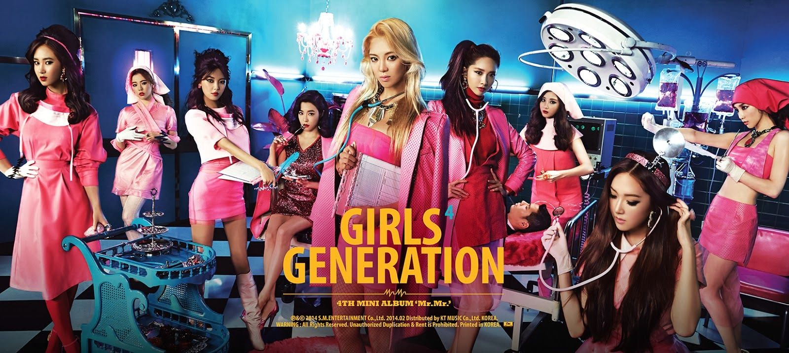

В настоящее время музыкальная индустрия настолько богата разнообразными течениями и жанрами, что сложно уследить за всеми яркими представителями тех или иных направлений. Они в свою очередь прокладывают свои корни, зарождаясь в разных уголках нашей необъятной планеты, и медленной поступью добираются до мировых музыкальных чартов, покоряя их вершины и сердца многочисленных поклонников со всех уголков Земли.
Стоит особое внимание уделить такому феномену, который уже не первый год поражает жителей нашей планеты – К-рор .

Откуда дует ветер?
Итак, К-рор (сокращение от Korean pop) пришел к нам из Южной Кореи. Этот новоиспеченный музыкальный жанр вобрал в себя яркие традиции хип-хопа, электропопа, добавили к этому щепотку танцевальной музыки, а напоследок приправили направление элементами современного ритм-н-блюза. Азиатские музыканты смогли выйти на более высокий уровень, теперь сложно отнести к-рор просто к музыке, на данный момент это уже целая субкультура. Миллионы молодых людей и девушек со всего мира в считанные часы скупают билеты на концерты любимых исполнителей, а также стараются подражать им во всем.
Немаловажную роль в культуре к-рор играет образ исполнителей. Начнем с того, что музыкантов принято называть «Idol» , и в данном случае понятие выходит за рамки привычного. Перед нами не личность, а профессия, в которой исполняется роль кумира. Внешний вид решает все. Подведенные глаза, яркие цветные волосы, вызывающие и броские наряды из кожи и меха, сверкающие серьги в ушах – так должен выглядеть «настоящий мужчина» в к-рор. Что же касается девушек, то для них уготована иная «униформа». Максимально короткий наряд, облегающий силуэт, длинные волосы, идеальное лицо с изящными линями, и наконец, очень худое тело – так выглядит типичная корейская певица. Фанатам нравится смотреть на красивых идеализированных людей, они восхищаются ими, создавая таким образом «Idol-ов». Поэтому поклонники к-рор стараются совершенствовать себя, подстраиваться под стандарты, продиктованные музыкантами.
Следующая отличительная черта корейских исполнителей, которая позволяет им завоевывать сердца фанатов по всему миру – хореография. В клипах групп и во время концертов можно наблюдать не просто ритмичные телодвижения, а целое представление, которое сложно сравнить с чем-то еще. К слову, видеоролики этого жанра — запоминающиеся и необычные, разнообразные вокальные партии поддерживаются броскими ритмами песен. Все это подчеркивается театрализованным представлением и яркими образами.
Еще одна деталь, которая характерна продвижению к-рор по всему миру – это отношение музыкантов к окружающим. В первую очередь, они очень внимательны и дружелюбны со своими поклонниками, поэтому нередко организуют с ними встречи, автограф-сессии и прочие мероприятия, где каждый может оказаться поблизости со своим кумиром. Во-вторых, «Idol» заботятся о любви своих фанатов к собственной персоне, для чего исполнители намеренно отказываются афишировать подробности своей личной жизни. Для публики каждый музыкант не только прекрасен, но и свободен, а значит, можно смело строить воздушные замки на счет вечной любви и пышной свадьбы. Да, все мы не без греха, и порой представляем себя в роли подружки или бойфренда, той или иной знаменитости.
Обратная сторона медали.
Не все так прекрасно и безоблачно, как может показаться на первый взгляд. Безусловно, «на вкус и цвет товарищей нет», поэтому не каждому придется по нраву творчество корейских исполнителей. Однако можно выделить ряд недостатков, которые могут негативно повлиять на фанатов.
Полная бессмыслица – именно так можно описать многие песни в к-рор. Порой несогласование строк можно оставить без внимания, но отсутствие смыслового содержание в лирике – сложно обойти стороной. И, конечно же, в погоне за мировой славой, музыканты нередко используют английские слова, допуская в них многочисленные ошибки.
Корейские звезды, стоит полагать, способствуют анти-искусству, ведь здесь не столь важны твои вокальные способности, больше всего окружающих интересует твой внешний вид. Практически любого можно научить танцевать, а голос без труда обработать на компьютере. В результате чего горячо любимых айдолов втискивают в жесткие рамки, ведь компании стараются создать именно того «робота», который будет отвечать запросам публики.
Формирование ненависти к себе. Это одна из самых больших проблем, которую вызывает к-рор. Как говорилось ранее, все исполнители, как на подбор, красивы и стройны, в результате чего, фанаты хотят быть такими же. Формирование мнения – если ты похож на айдолов, то ты красивый, если нет, то ты урод – процветает. В данной ситуации, к сожалению, нет «золотой середины».
Во главе жанра.
Безусловно, как и в любом другом музыкальном жанре, в к-рор найдется множество талантливых коллективов и исполнителей, которые нравятся публике.
Королями корейской субкультуры в Корее считаются BIGBANG. Многоуважаемая пятерка не так давно вернулась после четырехлетнего перерыва и по-прежнему собирает кучу поклонников.
Им в спину дышат EXO – монстры к-рор. Им хватило всего несколько лет, после дебюта, чтобы получить мировую популярность.
Среди девушек наибольшей популярностью пользуется группа Girls Generation. Очень многие из тех, кто не является страстным поклонником корейской музыки, хоть раз слышали об этом коллективе и успели оценить парочку видеоклипов исполнительниц.
И еще один женский коллектив, который также горячо любим российскими фанатами — 2NE1. Образ этих девушек покоряет харизмой.
К-рор широкими шагами путешествует по всей планете с каждым годом переманивая в свои ряды все больше поклонников этого жанра. Того и гляди, весь мир падет под натиском броских корейских айдолов.